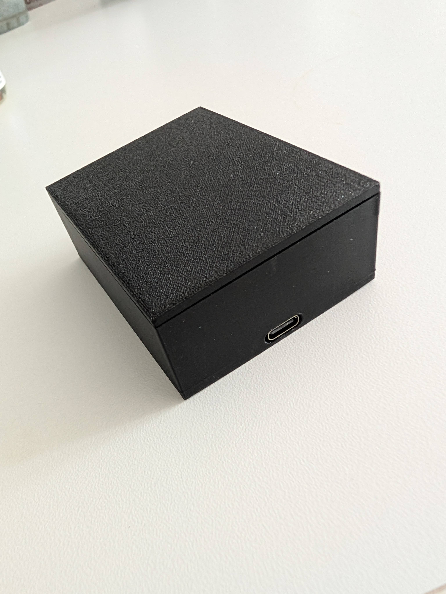

FeaturedBluetoothMax
01Open-source Bluetooth LE gateway for chess computer modules with a ChessLink/Mode-B interface. An ESP32-C3 wirelessly connects cable-based chess computers to supported Bluetooth e-boards and translates their protocols at runtime -- including a standalone mode with no cable computer required, and automatic PGN game recording with USB retrieval.